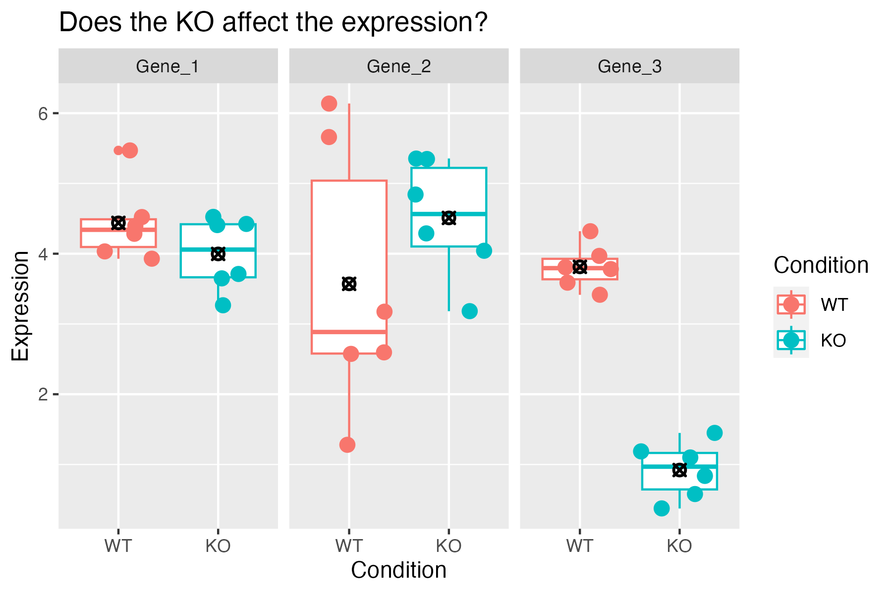

In this module, we will learn:
- What a p-value does (and does not!) represent
- How to modify and fit our DE model
- How to generate tables of DE statistics
- The importance multiple hypothesis corrections
Differential Expression Workflow
Now we will consider what we learned from our QC results before
testing for differential expression between samples in our groups of
interest.

Testing for DE
Before showing the code for generating differential expression
results, let’s walk through some toy data and discuss our intuition, its
limitations, and what we can do to formalize our thought around
determining if a gene is differentially expressed.
Let’s start by looking at expression boxplots for a few “genes” where
we’ve made up the data. In each plot, we are comparing the expression
levels (on the y-axis) for samples (each point) representing a WT (red)
and KO (teal) condition. The boxplot shows the 25% - 75% distribution,
along with outliers, with a bar representing the median value, and a
black-crossed-point representing the mean.
For the first example, we ask: Does the KO affect the expression of
the gene?
It seems pretty clear that there is a large difference between the
means of the two groups, and within-group spread is quite low. So the
answer to the question is likely “Yes”.
Consider a second example:

Here there isn’t a large difference between the means of the two
groups, and there is quite a bit of spread within-group. The answer here
is likely “No”.
Finally, consider a third example:

The means are not so close to each other in this example, though
there is still quite a bit of spread. This is example is perhaps less
clear.
Looking at all three of the hypothetical genes together, we see them
in relation to one another and how they span the range from No, to
Maybe?, to Definitely.

Now, consider needing to make this decision for 20,000 genes. Even if
all the genes had clear separation, that would take a lot of time.
However, it’s reasonable to expect to see a lot of genes with more
ambiguous expression like Gene 2.
We need a formal, reproducible, way to make this
decision!
Thankfully statistics provides the formality we want, but for any
statistical test we need to clearly state what we are testing. When
testing for differential expression we assume that for any particular
gene, there is no difference in expression between conditions.
Statisticians would call this the “null
hypothesis”.
For each gene, DESeq2 computes a “Wald statistic” which is a single
number encapsulating the difference in the means and the spread of the
groups. However, this number alone doesn’t allow us to determine if a
gene is differentially expressed. We need a second
number to give us an idea of how extreme that statistic is among the
distribution of possible statistics, which is the
“p-value”. The “p-value” along with
choosing a threshold will inform us if we can reject the null
hypothesis and classify a gene as differentially expressed.
Imagine shuffling the group labels and recomputing the Wald statistic
over and over again. You’d get a distribution of statistics that would
look similar to a normal curve. The p-value essentially tells you how
likely you are to have seen the statistic by chance. So when we set a
p-value = 0.05 as a threshold, we’re saying, “there is a 5% chance I’d
see something this extreme when there was actually no effect”. So the
evidence is strong, but not
ironclad.
DESeq2 Model Fitting
Based on our PCA results, we’ll copy our DESeq object and revise our
original model design to add a covariate for “batch”. Then, we’ll fit
our model using the DESeq function and take a look at the
objects we generate. This command applies the model to our data, using
the sample information supplied and model dds_batch object
so can take some time to run.
# access model slot from original `dds_filtered` DESeq2 object
design(dds_filtered)
~condition
# copy original object and then modify model
dds_batch_filtered = dds_filtered
design(dds_batch_filtered) <- ~ condition + batch
# after updating model, fit model with `DESeq` function
?DESeq
dds_batch_fitted = DESeq(dds_batch_filtered)
dds_batch_fitted
class: DESeqDataSet
dim: 16249 6
metadata(1): version
assays(4): counts mu H cooks
rownames(16249): ENSMUSG00000000001 ENSMUSG00000000028 ... ENSMUSG00000118651
ENSMUSG00000118653
rowData names(26): baseMean baseVar ... deviance maxCooks
colnames(6): sample_A sample_B ... sample_E sample_F
colData names(4): genotype condition batch sizeFactor
While we won’t be able to delve into model options in detail, more
complex model designs including adding “interaction terms” between
multiple group labels, are helpfully described in this support thread
as well as in the DESeq2
vignette.
Click for example of model design check
When including multiple terms in our model it’s helpful to check the
corresponding design matrix to ensure that our batches are not
confounded, which would cause DESeq2 to return a
model not full rank error when attempting to fit the model.
We can do that using the model.matrix function, providing
our intended model and our sample information.
model.matrix(~ condition + batch, samplesheet_batch)
(Intercept) conditiondeficient batchDay2 batchDay3
sample_A 1 0 0 0
sample_B 1 0 1 0
sample_C 1 0 0 1
sample_D 1 1 0 0
sample_E 1 1 1 0
sample_F 1 1 0 1
attr(,"assign")
[1] 0 1 2 2
attr(,"contrasts")
attr(,"contrasts")$condition
[1] "contr.treatment"
attr(,"contrasts")$batch
[1] "contr.treatment"
When we look at the outputs, we can see that all of the returned columns
have values (1) included. If our model was not full rank,
then we would see a columns with no values (all 0)
returned.
Dispersion models and possible warning messages
Depending on the data set you are analyzing, you may see a warning
that the default ‘parametric’ dispersion model so a local regression was
substituted. When seeing this warning, we recommend looking at a
dispersion plot with the plotDispEsts(dds) function, but as
this bioconductor
thread discusses, other visualizations of our data might be more
helpful and/or easier to interpret why the data doesn’t fit the default
parametric model.
Click for code for a plot of dispersion estimates
We can visualize the dispersion estimates with the
plotDispEsts function. This plot shows the the DESeq2
normalization results for our data, which centers on shrinking the
variance across all genes to better fit the expected spread at a given
expression level.
plotDispEsts(dds_batch_fitted)
Above is the raw data plotted in black, the fitted (or expected)
dispersion in red, and the normalized data with scaled variance in blue.
Since we have fairly small sample sizes for each condition, we see
shrinkage for many genes but a reasonable correlation between the
expression level and dispersions.
This HBC
tutorial has a more detailed overview of estimating size factors,
estimating gene dispersion, and the shrinkage procedure, as well as
examples of concerning dispersion plots that may suggest reassessing
quality of the experimental data.
Notice that there is now more information in the
DESeqDataSet object than there was prior to our
normalization. There is information about the model fit and about the
library size normalization. DESeq2 will use this information when we
perform the test for differential expression.
The DESeq() function is actually doing three things
automatically for us. It calculates:
- The size factors to normalize for library size with
estimateSizeFactors(dds_filtered),
- Dispersion estimates to shrink the dispersions with
estimateDispersions(dds_filtered), and
- The Wald test statistics with
nbinomWaldTest(dds_filtered).
The resultsNames() function returns the names of the
estimated effects of the model. Note that the results are stored based
on the levels we set in the sample sheet and that the convention is to
always have “case” first versus “control” second.
resultsNames(dds_batch_fitted)
[1] "Intercept" "condition_deficient_vs_control"
[3] "batch_Day2_vs_Day1"
The results include the single comparison representing the two levels
of condition. If there were more levels in the
condition column, there would be more results listed here
because DESeq2 would implicitly compare all other levels to the
reference level.
Checkpoint: If you see the same results when you
execute resultsNames(dds_batch_fitted), please indicate
with the green ‘yes’ button. Otherwise, please use the red ‘x’ button to
get help
Generating DE Results
There is only the one comparison in the results, so we will refer to
it in the name parameter of the results()
function, and assign the result as an object.
results_deficient_vs_control = results(dds_batch_fitted, name = 'condition_deficient_vs_control')
head(results_deficient_vs_control)
log2 fold change (MLE): condition deficient vs control
Wald test p-value: condition deficient vs control
DataFrame with 6 rows and 6 columns
baseMean log2FoldChange lfcSE stat pvalue padj
<numeric> <numeric> <numeric> <numeric> <numeric> <numeric>
ENSMUSG00000000001 1489.83039 0.278343 0.148278 1.877165 0.0604955 0.324515
ENSMUSG00000000028 1748.93544 0.221671 0.128835 1.720588 0.0853256 0.385578
ENSMUSG00000000031 2151.87715 0.135823 0.284313 0.477724 0.6328467 0.866812
ENSMUSG00000000037 24.91672 0.599542 0.562067 1.066673 0.2861195 NA
ENSMUSG00000000049 7.78377 -1.227258 1.148327 -1.068735 0.2851890 NA
ENSMUSG00000000056 19653.54030 -0.201183 0.167344 -1.202215 0.2292803 0.596345
If we look at the results table, we see that the row names are gene
identifiers (in this case ENSEMBL IDs because that’s what the GTF we
used in the call to RSEM+STAR) and then we see the following
columns:
baseMean is the average of the normalized count values,
divided by size factors and taken over all samples, and can be
interpreted as the relative expression level of that gene across all
samples.log2FoldChange is the log2 transformed ratio of the
expression of the numerator group (first group) over the denominator
group (second group after “vs”). Note that in our comparison, the
log2FoldChange column compares the expression of
deficient over the denominator group, control.
If the value is positive, that means the expression of that gene is
greater across the deficient samples than across the
control samples. If the value is negative, that means the
expression of that gene is greater across the deficient
samples.lfcSE is the standard error for the log2 fold change
estimate.
Note:
results() defaults
If no arguments are passed to results(), then the log2
fold changes and Wald test p-value will be for the last
variable in the design formula, and if this is a factor, the
comparison will be the last level over the
reference level. If you specify name, as
we did above, then the behavior is given by the name used from
resultsNames().
There are multiple ways to specify the test to be done using the
results() function. It is especially helpful to know this
when fitting more complex models and testing more complex contrasts. To
demonstrate this, consider this description from the help for
results():
contrast: a character vector with exactly three
elements: the name of a factor in the design formula, the name of the
numerator level for the fold change, and the name of the denominator
level for the fold change
So an alternative way to test the same contrast as above
(i.e. deficient / control) is:
alt_results_deficient_vs_control = results(dds_batch_fitted, contrast = c('condition', 'deficient', 'control'))
head(alt_results_deficient_vs_control)
log2 fold change (MLE): condition deficient vs control
Wald test p-value: condition deficient vs control
DataFrame with 6 rows and 6 columns
baseMean log2FoldChange lfcSE stat pvalue padj
<numeric> <numeric> <numeric> <numeric> <numeric> <numeric>
ENSMUSG00000000001 1489.83039 0.278343 0.148278 1.877165 0.0604955 0.324515
ENSMUSG00000000028 1748.93544 0.221671 0.128835 1.720588 0.0853256 0.385578
ENSMUSG00000000031 2151.87715 0.135823 0.284313 0.477724 0.6328467 0.866812
ENSMUSG00000000037 24.91672 0.599542 0.562067 1.066673 0.2861195 NA
ENSMUSG00000000049 7.78377 -1.227258 1.148327 -1.068735 0.2851890 NA
ENSMUSG00000000056 19653.54030 -0.201183 0.167344 -1.202215 0.2292803 0.596345
This way of calling results() is especially helpful when
the levels of the column of interest contain more than two levels
because you can specify exactly which levels to test with little
confusion.
If we continue to look at the results table, after the
lfcSE column we see:
stat is the calculated Wald statistic for that
gene.pvalue is the nominal significance that we
described earlier.padj is the adjusted p-value (also known as a
“q-value”) and is what we use for determining significantly differently
expressed genes.
Question
Why should we use values from padj instead of the
pvalue? Post in the Slack thread.
Multiple hypothesis testing and FDR correction
Each p-value reported in the table is the result of a single test for
a single gene. As stated earlier - with a significance cut-off of
p-value < 0.05, we’re expecting a 5% chance it is a false positive.
However the more genes we test, the greater chance we have of seeing a
significant results by chance.
The multiple hypothesis problem
For example, if we consider running the Wald test for 20 genes
instead of just three, we might see something like this where
Gene N has a p-value below our threshold of 0.05. If we see
this pattern, do we expect that Gene N is actually
differentially expressed (e.g. a true positive)?

What if we tested 100 genes? How many genes would we expect to have
p-values < 0.05, just by chance?

What if we tested 10,000 genes? We would expect to see 500 genes with
p-values < 0.05, just by chance!

So if we are testing 20,000 genes for differential
expression, we would expect to see ~1,000 genes (5%) with statistical
significance, just by chance.
The FDR solution
To address this multiple
hypothesis correction can be performed. While there are a few
approaches, the default method in DESeq2 is the False Discovery Rate
(FDR) (Benjamini
and Hochberg (1995)).
The default FDR rate cutoff for our analyses is 0.05, meaning the
proportion of false positives amongst our differentially expressed
genes is controlled to 5%. So if we find 500 genes that are
differentially expressed with this FDR cutoff, we expect only 25 of them
to be false positives. DESeq2 vignette’s includes a further
discussion of filtering and multiple testing correction.
Note
on padj values set to NA
As discussed in the HBC
tutorial as well as the DESeq2
vignette, DESeq2 reduces the number of genes that will be tested by
removing genes with low number of counts and outlier samples.
- If within a row, all samples have zero counts, the baseMean column
will be zero, and the log2 fold change estimates, p-value and adjusted
p-value will all be set to NA.
- If a row contains a sample with an extreme count outlier then the
p-value and adjusted p-value will be set to NA. These outlier counts are
detected by Cook’s
distance.
- If a row is filtered by automatic independent filtering, e.g. for
having a low mean normalized count, then only the adjusted p-value will
be set to NA.
Save fitted model and data as .rds
It can be useful to save key R objects to file as we proceed through
our analysis - before we do that, let’s look at the documentation for
the save function to see if it does what we want.
?save
As we can see from the documentation the function save
writes an “external representation” of R objects that can be read back
from the file at a later date by using the function load or
attach in most cases. We’ll proceed with saving our
dds_batch_fitted object, creating a subdirectory first.
dir.create("outputs/Robjs", recursive=TRUE)
Warning in dir.create("outputs/Robjs", recursive = TRUE): 'outputs/Robjs' already exists
save(dds_batch_fitted,
file="outputs/Robjs/dds_batch_fitted.rds")
Summary
In this section, we:
- Fitted our DESeq2 model
- Performed statistical tests for comparisons of interest
- Generated tables of differential expression results - i.e. fold
changes and adjusted pvalues for each gene in dataset
- Discussed importance and application of multiple hypothesis
correction
- Saved an Robject from our environment to file
Now that we’ve generated our differential comparisons and have an
understanding of our results, including multiple hypothesis correction,
we can determine how many genes are differentially expressed between our
conditions and how to visualize our results.
Sources
These materials have been adapted and extended from materials listed
above. These are open access materials distributed under the terms of
the Creative
Commons Attribution license (CC BY 4.0), which permits unrestricted
use, distribution, and reproduction in any medium, provided the original
author and source are credited.
